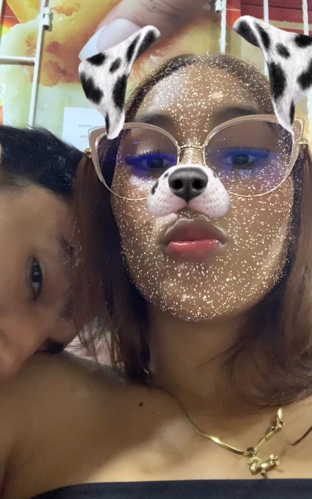

Hola Majo, un pequeño pajarito me contó que amabas las cartas. Que te parece te enviaron una, quería tener un detalle contigo, anoche, quedé demasiado desubicado y el que no me quieras hablar para poder entendernos del todo es un poco pesado pero la verdad sé muy bien que yo fui el del error pero aun con todo y eso me sinceré contigo. Solo somos una vez en la vida y quizá poder disfrutar de la mera compañía del otro pueda ser lo que necesitemos. Quiero que te lleves un lindo recuerdo esta navidad. Espero puedas romper esa barrera y logremos hablar. Me caes super bien y ayer, aunque raro, se sintió un buen rato y te senti muy feliz y comoda, me gusto sacarte una sonrisa att: Tiago 